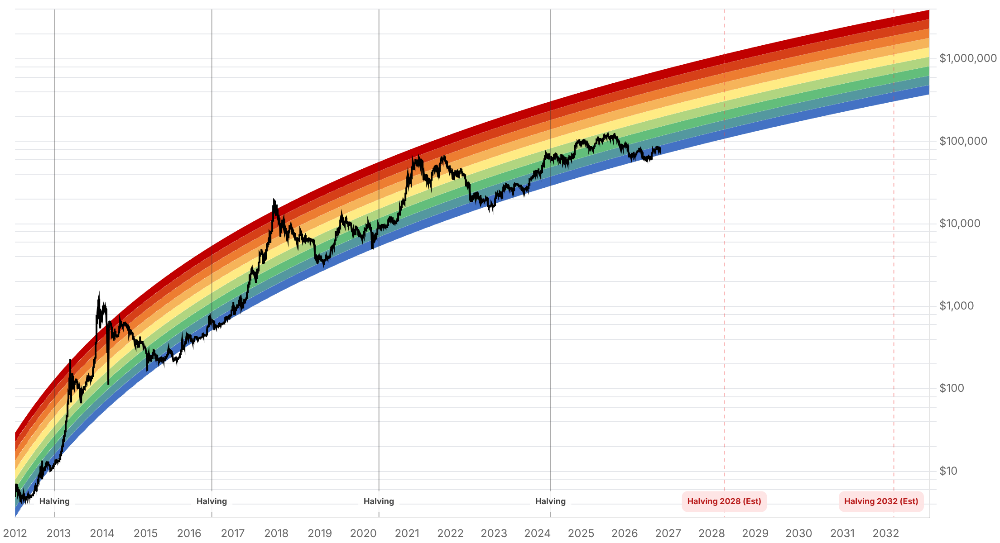

Reporte financiero
BTC cotiza en USD 80.800,00 en vivo (07:18 UTC), prácticamente plano (-0,001% intradía), tras reclamar el nivel de USD 80.000 luego de dos días por debajo de esa zona. Lo nuevo desde el reporte de ayer: el repunte no responde a un catalizador puntual sino a posicionamiento de cara a la decisión de la Fed de HOY 28 de octubre (anuncio 14:00 ET, conferencia de prensa del presidente Kevin Warsh a las 14:30 ET) -CryptoQuant señaló que 'una señal decisiva de rally todavía no ha emergido', calificando el movimiento como técnico/especulativo más que de convicción. La probabilidad de que la Fed mantenga la tasa sin cambios se afirmó levemente desde ayer: CME FedWatch marcaba anoche (27 oct) 90,6% de probabilidad de mantener vs. 9,4% de una subida de 25pb, muy en línea con el rango 90-93%/7-10% de ayer -sin indicios de un recorte sobre la mesa. En flujos de ETF, el problema de datos poco confiables se agravó: además de las cifras aún sin resolver del 23, 24 y 25 de octubre, surgió una nueva discrepancia para el 20 de octubre (+USD 23,16M de entrada vs. -USD 40,5M de salida según distintas fuentes secundarias), y todavía no se publican datos del 27 de octubre. Nuevo catalizador a vigilar: Strategy reporta resultados del Q3 2026 mañana jueves 29 de octubre -un evento que podría mover el sentimiento en empresas de tesorería cripto similares (Metaplanet, Strive). Sin novedades en la apelación del fallo del Reino Unido sobre los 61.000 BTC, en la Clarity Act, ni en el plazo vencido de Blumenthal a Cantor Fitzgerald (sigue sin respuesta pública conocida). El Fear & Greed Index sube de 48 a 51, cortando la racha de tres días a la baja y volviendo a 'Neutral' con sesgo levemente positivo.
Tras dos días por debajo de USD 80.000 (mínimos de USD 79.343-79.486 el 26 y 27 de octubre), el precio reclamó ese nivel y cotiza en USD 80.800,00 en vivo (07:18 UTC), prácticamente plano frente al cierre anterior. La cobertura de mercado (coin-turk, 27 oct; Benzinga/TradingView, 28 oct) enmarca el movimiento como estabilización previa al anuncio de la Fed de hoy, no como una noticia puntual. CryptoQuant, citado en esa misma cobertura, fue explícito: 'una señal decisiva de rally todavía no ha emergido' -una lectura escéptica sobre si el repunte tiene convicción real o es solo cobertura de posiciones cortas de cara al FOMC.
El anuncio de la Fed es hoy miércoles 28 de octubre a las 14:00 ET, con conferencia de prensa del presidente Kevin Warsh a las 14:30 ET. La lectura más reciente de CME FedWatch (anoche, 27 de octubre) marcaba 90,6% de probabilidad de mantener la tasa sin cambios en el rango de 3,75%-4% y 9,4% de una subida de 25 puntos básicos -una leve afirmación del escenario de 'mantener' respecto al rango 90-93%/7-10% reportado ayer, sin que aparezca una probabilidad relevante de recorte en ninguna fuente consultada hoy.
Las cifras del 23, 24 y 25 de octubre siguen sin poder confirmarse con una fuente única y confiable, igual que ayer. A eso se suma hoy una discrepancia adicional detectada para el 20 de octubre: una fuente secundaria reporta una entrada neta de USD 23,16M ese día, mientras otra reporta una salida neta de USD 40,5M calificándolo como 'cuarto día consecutivo de salidas'. Tampoco se encontraron datos publicados del 27 de octubre todavía (es habitual que se publiquen con un día de desfase). En conjunto, esto sugiere que el seguimiento de flujos diarios de ETF de BTC se volvió notablemente menos confiable en las últimas dos semanas, más allá de cualquier día puntual -algo en sí mismo relevante para cualquier lector que siga este indicador.
No hay un nuevo filing que actualice las tenencias de BTC de Strategy (la última cifra confirmada, con una pequeña discrepancia entre fuentes de 848.517 vs. 848.250 BTC sin resolver, sigue sin cambios desde mediados de octubre). Lo nuevo es la fecha confirmada de resultados del Q3 2026: jueves 29 de octubre. TradingKey señala que un resultado fuerte podría reactivar compras en la caída en empresas de tesorería cripto comparables (Metaplanet, Strive), mientras uno débil podría pesar sobre el sentimiento del sector.
No se encontraron novedades en la apelación de Fieldfisher al fallo de la High Court británica sobre los 61.000 BTC (resolución esperada en 2027), en la Clarity Act (sin fecha de reintento desde el fracaso de cloture del 15 de septiembre), ni respuesta pública de Cantor Fitzgerald o Tether al plazo vencido el 23 de octubre que les dio el senador Blumenthal -la búsqueda de hoy no encontró cobertura posterior al 23 de octubre sobre este último punto en ningún sentido.
Tras retroceder de 54 a 50 y luego a 48 en los tres días previos, el índice sube hoy a 51, volviendo a terreno levemente positivo dentro de la clasificación 'Neutral'. El cambio acompaña el reclamo del nivel de USD 80.000 en el precio, aunque como señala CryptoQuant, sin que eso implique todavía una señal de rally confirmada.
| Periodo | Valor |
|---|---|
| 22 oct | 81311.89 |
| 23 oct | 81074.19 |
| 24 oct | 80790.84 |
| 25 oct | 80024.01 |
| 26 oct | 80006.66 |
| 27 oct | 80805.08 |
| 28 oct (en vivo) | 80800.0 |
| Periodo | Valor |
|---|---|
| Fear & Greed | 51 |

“Una señal decisiva de rally todavía no ha emergido.”
“El aumento de los costos de energía arriesga alimentar más inflación, mientras que un crecimiento más débil del empleo podría tener un impacto negativo en los mercados de acciones.”
El catalizador dominante de las próximas horas es la decisión de la Fed de hoy 28 de octubre (14:00 ET, conferencia de prensa 14:30 ET), con el precio ya habiendo reclamado los USD 80.000 en lo que la cobertura de mercado describe como posicionamiento previo al anuncio, no una señal de rally confirmada (CryptoQuant). CME FedWatch afirma levemente la probabilidad de 'mantener' (90,6% anoche vs. 90-93% de ayer), con apenas ~9,4% de probabilidad de una subida de 25pb y sin un recorte realista sobre la mesa. TradingKey advierte que la volatilidad implícita está elevada y recomienda reducir el apalancamiento antes del anuncio: un sorpresa dovish podría llevar a BTC hacia USD 90.000 hacia fin de año, mientras un tono hawkish o datos económicos más calientes podrían presionar hacia la zona de soporte de USD 75.000-76.200.
El seguimiento de flujos de ETF se volvió notablemente menos confiable en las últimas dos semanas: a las cifras ya disputadas del 23, 24 y 25 de octubre se suma hoy una nueva discrepancia para el 20 de octubre, y el dato del 27 de octubre todavía no se publicó. Resolver esta falta de una fuente única confiable sigue siendo el punto más importante a cerrar en próximos reportes. El rango de consenso de QCP Capital para el Q4 (USD 80.000-90.000) no tuvo actualización esta semana y sigue describiendo un 'estancamiento' con rebotes por cobertura de cortos más que demanda spot nueva. Los resultados de Strategy del Q3 2026, mañana 29 de octubre, son el próximo catalizador institucional a vigilar.
Sin cambios en los objetivos de precio de largo plazo ya reportados en ediciones anteriores (Citigroup, Bernstein, Standard Chartered, Tom Lee, NYDIG, Armstrong) ni en la tesis de acumulación de Strategy -aunque persiste una pequeña discrepancia sin resolver entre fuentes sobre la cifra exacta de tenencias (848.517 vs. 848.250 BTC). En el frente regulatorio/legal, sin novedades: la apelación del fallo británico sigue con resolución esperada en 2027, la Clarity Act continúa sin fecha de reintento en el Senado, y el plazo vencido de Blumenthal a Cantor Fitzgerald sigue sin respuesta pública conocida ni cobertura posterior encontrada.
El reclamo de los USD 80.000 no refleja, según CryptoQuant, una señal de rally confirmada, sino posicionamiento previo al anuncio. Con una probabilidad de 'mantener' ya elevada (90,6%) ya en gran parte descontada por el mercado, el movimiento posterior al anuncio -y especialmente a la conferencia de prensa de las 14:30 ET- puede ser más informativo que el resultado de la decisión en sí.
A las cifras ya disputadas del 23-25 de octubre se suma ahora una discrepancia también para el 20 de octubre. Hasta que una fuente primaria (SoSoValue o Farside) publique una tabla diaria completa y consistente, tratar cualquier cifra puntual de estos días con escepticismo, y priorizar la dirección (entrada/salida) sobre el monto exacto.
Según TradingKey, un resultado fuerte podría reactivar compras en la caída en empresas de tesorería cripto comparables (Metaplanet, Strive); uno débil podría pesar sobre el sentimiento del sector más allá de Strategy mismo.